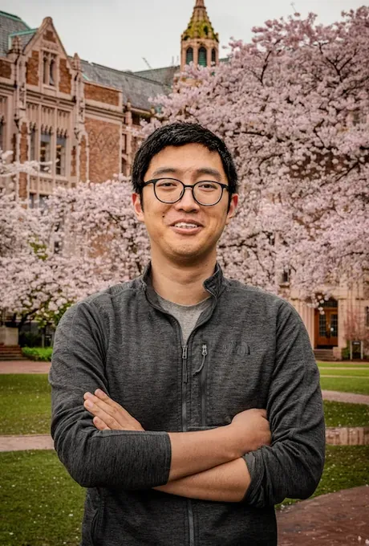

Tianyi Ren
I am a postdoctoral scholar in Mechanical Engineering at the University of Washington, building trustworthy, clinically deployable AI for neuroimaging.
I work with Prof. Mehmet Kurt in the Kurt Lab. I received my Ph.D. and M.S. from Lehigh University and my B.S. from Southwest Jiaotong University.
Email: tr1@uw.edu
News
- Two papers at MIDL 2026 and two at ISBI 2026.
- a2 Pilot Award ($310K, co-PI) for explainable brain-age prediction.
- Taught BIS 285 at UW (rating 4.6/5.0).
- 1st place, ISLES’24 stroke lesion segmentation challenge, MICCAI 2024.
- Oral presentation of Re-DiffiNet at MIDL 2024.